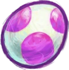

Quiz normal
Choisissez vos paramètres
Temps par question (secondes) :
Nombre de questions :
Difficulté :
Facile
Moyenne
Difficile
Commencer le quiz
Retour à l'accueil
Score : 0
Quiz terminé !
Recommencer le quiz
Retour à l'accueil